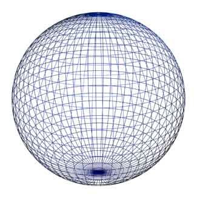

ატრიბუტი არის თეგის სტრუქტურა რომელიც ეხმარება თეგს მისი ფუნქციის შესრულებაში .
html-ში არის ორი სახის ატრიბუტია ესენია ფუნქციური ატრიბუტები-რომელიც აუცილებელია ელემენტის ძირითადი ფუნქციისთვის და დამატებითი ატრიბუტები .
src ; href ; type ; action .
ამ wikipedia-იის ბმულის Web browser-ზე გამოტანას href-ატრიბუტი განაპირობებს სფერო
ამ ფოტოს Web browser-ზე გამოტანას src-ატრიპუტი განაპირობებს .

ამ html-ფორმების Web browser-ზე გამოტანას type-ატრიბუტი განაპირობებს .
html-ში გვერდების მიხედვით ორი სახის ვებსატია . ესენია , ერთ გვერდიანი ვებსაიტი-single feig website აღწერა: ეს არის ვებსაიტი, რომელიც მთლიანად მოთავსებულია ერთ HTML გვერდზე. მომხმარებელი გადაადგილდება სხვადასხვა სექციაში სკროლით ან ღილაკებზე დაჭერით, რომლებიც გვერდზე გადაადგილებას ახდენენ, არა ახალ გვერდზე გადასვლით, არამედ იმავე გვერდზე. მრავალგვერდიანი ვებსაიტი (Multi Page Website) აღწერა: ეს ვებსაიტი შედგება მრავალი HTML გვერდისგან, თითოეული თავისი URL-ით. მომხმარებელი გადადის სხვადასხვა გვერდზე, როგორიცაა "მთავარი", "ჩვენს შესახებ", "სერვისები", "კონტაქტი" და ა.შ.